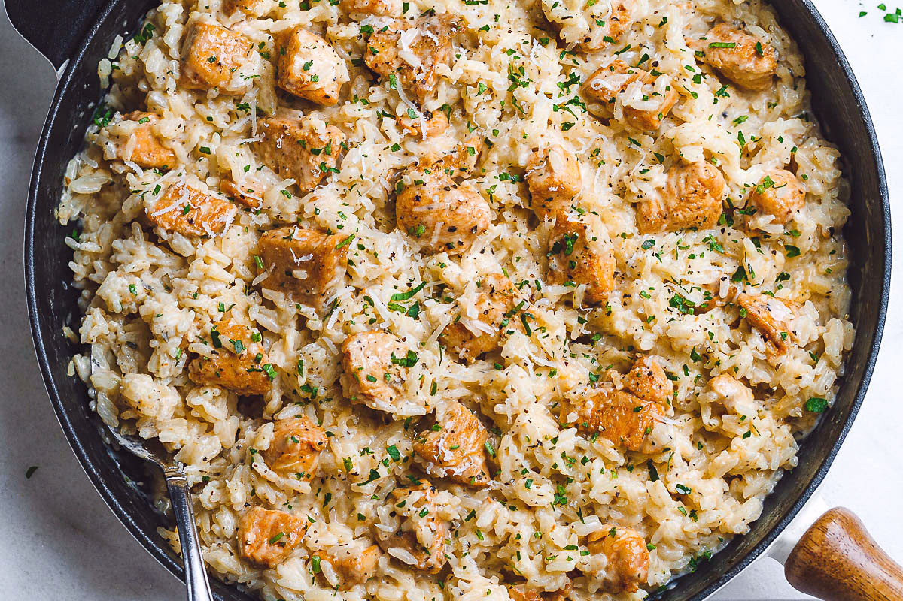

Chicken and Rice

Description
Chicken and rice is a dish that is very filling, and can feed a family for days depending on how much you prepare.
There is also two ways you can make it. You can do it a quick way or a long more proper way. I will be showing you
how to do it the longer and proper way as it taste better.
Ingredients
- White rice
- Canned chicken or chicken breast personally shredded
- Chicken bouillon cubes
- Water
- Salt and pepper
Steps
- With this recipe I am going to assume you know how to cook the rice. But while you are cooking the rice you want to add the chicken bouillon cubes to the water to give the rice a nice chicken flavor.
- Okay so for the second step you are going get the chicken that you have shredded or opened from a can and pour it on the rice on the pot/pan you made the rice in.
- Now you are going to turn the stove onto medium so you can heat the rice while cooking the chicken together.
- Once the pot/pan is heated you can slowly stir and add your salt and pepper while doing it
- Once you see the chicken getting a nice cooked look you can turn the stove off, and your dish is done. Enjoy!